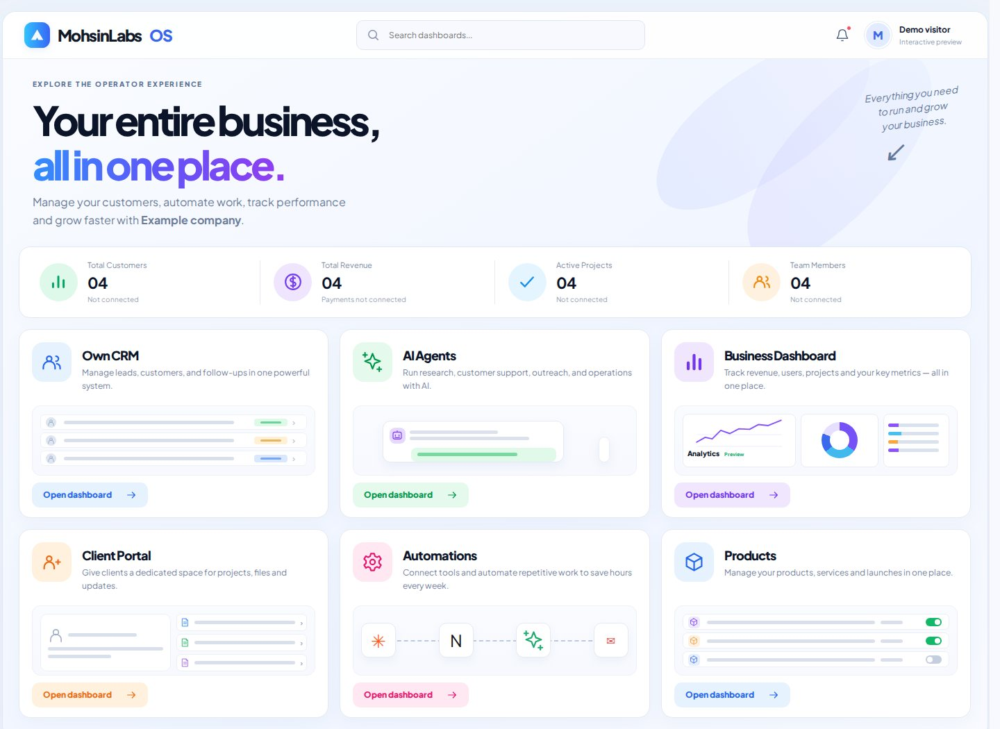
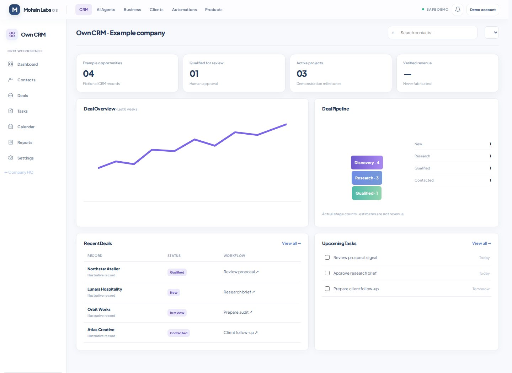
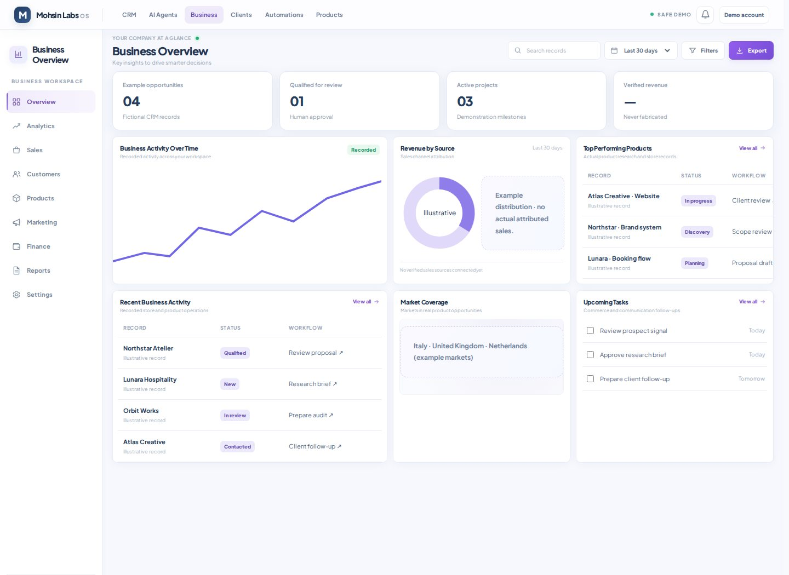
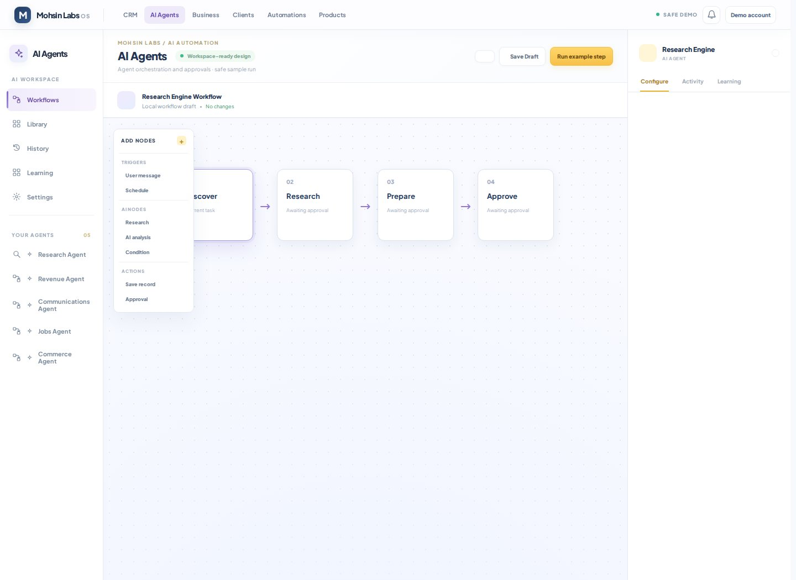

01
Company HQ
A clear starting point for the founder: the business, objectives, modules and the work that deserves attention.
I built Mohsin Labs OS because running several business goals through disconnected tabs, notes, spreadsheets and inboxes was becoming its own full-time job. The answer wasn't another dashboard. It was a practical home for the work — with records, workflows, integrations and human control in one place.
Founder-led internal product · Public demo uses fictional sample data · Not yet a public paid SaaS

A view of the Mohsin Labs OS product. The shareable demo is isolated from private business records.
Mohsin Labs is developing several revenue paths at once: employment, client services, e-commerce, digital products, content and outreach. Each has its own research, decisions, messages and follow-up work.
“Research was in one place, contacts in another, communication in my inbox, and next actions in my head. I wanted one connected workflow.”
As a solo founder, I needed to reduce repeated setup and context switching — without buying an expensive collection of software or pretending AI could safely make every decision.
The product is built around a deliberate workflow rather than a vague promise that nine AI agents do everything automatically.
Investigate real opportunities in ChatGPT and other appropriate sources.
Check identity, source URLs, dates and what the evidence actually supports.
Transfer small CSV / JSON batches into persistent OS research records.
Route records to workflows, draft actions and keep context together.
Review sensitive actions before execution and track what actually happened.
The research importer is designed for batches of up to 50 records. Import is not the same as automatic fact verification, and external actions require permissions and approval.
Different missions, one visual language. Each part is useful on its own, while contributing to the wider operating picture.
A clear starting point for the founder: the business, objectives, modules and the work that deserves attention.
Organize potential clients, website projects, opportunities and follow-up context instead of losing leads across spreadsheets.
Import evidence-backed job and business research, save opportunities and prepare application or outreach workflows without claiming actions were submitted.
Nine purpose-specific agent interfaces spanning research, revenue, jobs, communications, content, commerce and product development. Capabilities vary by agent.
Bring Gmail and WhatsApp-related communication into operational context, prepare drafts and maintain approval boundaries. Live connection health is checked separately.
Link Shopify / supplier work, product research and early product ideas to structured decisions — before spending or publishing.
I wanted a calm, consistent experience — not a collection of unrelated tools glued together. The same navigation, visual hierarchy and review-first philosophy carry across the workspace.



Mohsin Labs OS is a full-stack product, not a static interface concept. I use a Next.js application, TypeScript services, hosted authentication and database infrastructure, and connected deployment workflows.
A Next.js frontend, a TypeScript backend, Supabase for data and authentication, Vercel for web hosting, and Render for backend deployment. The operating records and the public demo have intentionally different access paths.
Mohsin Labs OS gives me an operational framework for my own business rather than asking me to juggle every workflow manually. The benefits I value today are qualitative — I have not published a measured hours-saved figure or revenue-attribution study.
“The goal was never to replace every decision with an AI call. It was to build a system that makes the next useful step easier.”
That distinction shaped the importer, separate demo, permission rules and the product's gradual evolution.
After proving the internal workflow, the next opportunity is to evaluate whether solo founders and small teams want the same connected system.
Product status matters: the public demo is available, but paid SaaS subscriptions and general customer onboarding are not live. Some agents are draft- or review-oriented rather than autonomous background workers. Integrations and specific outbound actions require individual operational checks.
Explore the interactive demo, or reach out to discuss web applications, business automation or a collaboration.